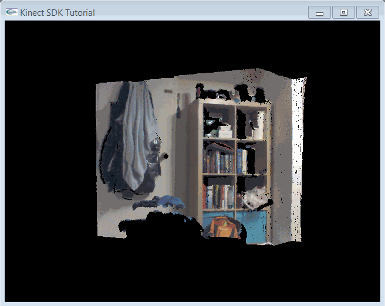

Kinect v2 SDK C++ - 3. Kinect Point Clouds
Goals: Learn how to align color and depth images to get
a colored point cloud.
Source: View Source Download: 3_PointCloud.zip
Overview
There are several new steps we want to take in this tutorial. The most interesting part is that now we're working with 3D data! Creating an interactive system is a bit too much code for us, though, so we just have a simple rotating point cloud. This tutorial has three parts: first, we'll talk briefly about why point clouds are harder than you might think. Then, we'll show the Kinect SDK side of how to get the right data. Finally, we'll show some OpenGL tricks to make things easy to display.Contents
Depth and RGB Coordinate Systems
Kinect Coordinate System
The Kinect uses a cartesian coordinate system centered at the Kinect's IR sensor. The positive Y axis points up, the positive Z axis points where the Kinect is pointing, and the positive X axis is to the left. One unit in this coordinate system is equal to one meter.
Alignment
A naive way of making a point cloud might directly overlap the depth and color images, so that depth pixel (x,y) goes with image pixel (x,y). However, this would give you a poor quality depth map, where the borders of objects don't line up with the colors. This occurs because the RGB camera and the depth camera are located at different spots on the Kinect; obviously, then, they aren't seeing the same things! Normally, we'd have to do some kind of alignment of the two cameras (the formal term is registration) so that we know what color pixel goes with what depth pixel. Fortunately Microsoft can already do this for us, so all we need to do is call the right functions. |  |
Kinect Code
There are two new issues that we have to deal with, and correspondingly two new interfaces:-
Up until now, we've only had to deal with a single data stream at a time.
However, now that we're using both color and depth data (and possibly other
types, such as IR or body-tracking data), we want to make sure that the
data we're processing is synchronized. Otherwise, the color image could show
one part of the scene while the depth data shows another!
Instead, we will use aMultiSourceFrameReader, which givesMultiSourceFrames. -
To deal with the different coordinate systems mentioned above, the SDK
provides an object that will do all the conversion work for you:
ICoordinateMapper.
Kinect Initialization
IKinectSensor* sensor; // Kinect sensor
IMultiSourceFrameReader* reader; // Kinect data source
ICoordinateMapper* mapper; // Converts between depth, color, and 3d coordinates
bool initKinect() {
if (FAILED(GetDefaultKinectSensor(&sensor))) {
return false;
}
if (sensor) {
sensor->get_CoordinateMapper(&mapper);
sensor->Open();
sensor->OpenMultiSourceFrameReader(
FrameSourceTypes::FrameSourceTypes_Depth | FrameSourceTypes::FrameSourceTypes_Color,
&reader);
return reader;
} else {
return false;
}
}
We open the MultiSourceFrameReader by specifying which
data we want in our frames. We can also request IR data, body tracking
data, and audio data. We don't need to deal with FrameSources separately from FrameReaders.
We also initialize our ICoordinateMapper here.
Getting Data from a MultiSourceFrame
For both the depth data and the color data, we can get the familiarIDepthFrame and IColorFrame from the MultiSourceFrame.
Here is the code for the depth data:
void getKinectData() {
IMultiSourceFrame* frame = NULL;
reader->AcquireLatestFrame(&frame);
// ...
getDepthData(frame, dest);
// ...
getColorData(frame, dest;
}
void getDepthData(IMultiSourceFrame* frame, GLubyte* dest) {
IDepthFrame* depthframe;
IDepthFrameReference* frameref = NULL;
frame->get_DepthFrameReference(&frameref);
frameref->AcquireFrame(&depthframe);
if (frameref) frameref->Release();
if (!depthframe) return;
// Process depth frame data...
if (depthframe) depthframe->Release();
}
The code is almost identical for color data; just replace all
occurrences of "depth" with "color"
Using the Coordinate Mapper Interface
We are dealing with three different coordinate spaces in this program.- The 3D (XYZ) space, where the point cloud coordinates are in, is used for display.
- The 2D (column, row) space of pixel coordinates in the 1920*1080 color image.
- The 2D (column, row) space of pixel coordinates in the 512*424 depth image.
CoordinateMapper to get a lookup
table mapping between depth pixel coordinates and 3D point coordinates,
and another one mapping between depth pixel coordinates to the corresponding
pixel in the color image.
// Global Variables
/*
For reference:
struct ColorSpacePoint { float X, Y; };
struct CameraSpacePoint { float X, Y, Z; };
*/
ColorSpacePoint depth2rgb[width*height]; // Maps depth pixels to rgb pixels
CameraSpacePoint depth2xyz[width*height]; // Maps depth pixels to 3d coordinates
// ...
void getDepthData(IMultiSourceFrame* frame, GLubyte* dest) {
IDepthFrame* depthframe;
// Populate depthframe from MultiSourceFrame...
// Get data from frame
unsigned int sz;
unsigned short* buf;
depthframe->AccessUnderlyingBuffer(&sz, &buf);
mapper->MapDepthFrameToCameraSpace(
width*height, buf, // Depth frame data and size of depth frame
width*height, depth2xyz); // Output CameraSpacePoint array and size
mapper->MapDepthFrameToColorSpace(
width*height, buf, // Depth frame data and size of depth frame
width*height, depth2rgb); // Output ColorSpacePoint array and size
}
To get the mappings, we call into the appropriate ICoordinateMapper
functions. You can find other possible mappings in the
ICoordinateMapper documentation
Note that most mapping functions require the depth frame as an input array
(even the ones that don't start with "DepthFrame" in the name).
Getting depth data from the Kinect
Now that we're dealing with 3D data, we want to imagine the depth frame as a bunch of points in space rather than a 512x424 image. So in ourgetDepthData function, we will fill in our buffer with
the coordinates of each point (instead of the depth at each pixel).
This means the buffer we pass into it has to have size
width*height*3*sizeof(float) for float
typed coordinates. Here, we simply use the depth2xyz
map that we got from the CoordinateMapper.
void getDepthData(IMultiSourceFrame* frame, GLubyte* dest) {
// Populate depth2xyz map...
float* fdest = (float*)dest;
for (int i = 0; i < width*height i++) {
*fdest++ = depth2xyz[i].X;
*fdest++ = depth2xyz[i].Y;
*fdest++ = depth2xyz[i].Z;
}
/* We use the fdest pointer for conciseness. Equivalently, we could use
for (int i = 0; i < width*height; i++) {
fdest[3*i+0] = depth2xyz[i].X;
fdest[3*i+1] = depth2xyz[i].Y;
fdest[3*i+2] = depth2xyz[i].Z;
}
*/
}
Getting color data from the Kinect
Now that we are thinking about things in terms of points instead of rectangular grids, we want our color output to be associated with a particular depth point. In particular, the input to ourgetRgbData function, analogously to the
getDepthData function, wants a buffer of size
width*height*3*sizeof(float) to hold the
red, green, and blue values for each point in our point cloud.
void getRgbData(IMultiSourceFrame* frame, GLubyte* dest) {
IColorFrame* colorframe;
// Populate colorframe...
colorframe->CopyConvertedFrameDataToArray(colorwidth*colorheight*4, rgbimage, ColorImageFormat_Rgba);
// Write color array for vertices
float* fdest = (float*)dest;
for (int i = 0; i < width*height; i++) {
ColorSpacePoint p = depth2rgb[i];
// Check if color pixel coordinates are in bounds
if (p.X < 0 || p.Y < 0 || p.X > colorwidth || p.Y > colorheight) {
*fdest++ = 0;
*fdest++ = 0;
*fdest++ = 0;
}
else {
int idx = (int)p.X + colorwidth*(int)p.Y;
*fdest++ = rgbimage[4*idx + 0]/255.;
*fdest++ = rgbimage[4*idx + 1]/255.;
*fdest++ = rgbimage[4*idx + 2]/255.;
}
// Don't copy alpha channel
}
/* We use fdest pointer for conciseness; Equivalently, we could use
for (int i = 0; i < width*height; i++) {
fdest[3*i+0] = ...
fdest[3*i+1] = ...
fdest[3*i+2] = ...
}
*/
}
In this block, we iterate through the pixels of the depth image,
looking up the associated coordinates in the color image using
the depth2rgb map we obtained from the CoordinateMapper.
We check whether the depth pixel actually projects to a pixel in the RGB
image, and if it does not, then we just assign that point a black color.
There's a bit of funny math in those last couple of lines, so let's walk through it. First of all, the color image frame is in RGBA format, one byte per channel, laid out row by row. So the linear index for pixel (x,y) is
x + width*y. X and Y can be floating point, so we
round them down before using them as an array index by casting to int.
Then, the 4-byte block we want is at linearindex*4.
Finally, we want to convert from byte-valued (0-255) RGBA into
float-valued (0.0-1.0) RGB, so we take the first 3 channels and divide
by 255: rgbimage[4*linearindex + channel]/255.f.
OpenGL Display
We're going to use array buffers to display our point cloud. What are array buffers? They let you replace a series ofglBegin, glColor, glVertex, glEnd calls with a single function call. As a bonus, the
array buffers are stored on the GPU so displaying them is more efficient. They do make the code a bit more complicated, though.
Want to skip the array buffers? Go here.
To use array buffers, we have to deal with OpenGL extensions. To make this easier, we use GLEW.
Installing GLEW
- Download and unzip the GLEW binaries from http://glew.sourceforge.net/
- Copy the contents of the Include/ and Lib/ directories you just
unzipped into the appropriate Windows SDK directories. e.g.
- C:/Program Files/Microsoft SDKs/Windows/v7.0A/Include/ and C:/Program Files/Microsoft SDKs/Windows/v7.0A/Lib/ for Visual Studio 2010
- C:/Program Files/Windows Kits (x86)/8.1/Include/um/ and C:/Program Files (x86)/Windows Kits/8.1/Lib/winv6.3/um/ for Visual Studio 2012+
- Copy bin/x64/glew32.dll into C:/Windows/System32 and bin/x86/glew32.dll into C:/Windows/SysWOW64. If you have a 32-bit system, just move bin/x86/glew32.dll into C:/Windows/System32
OpenGL Code
Since we're dealing with 3D data, we now also have to worry about camera settings. We use agluPerspective and gluLookAt to deal with that for us.
// Global variables:
GLuint vboId; // Vertex buffer ID
GLuint cboId; // Color buffer ID
// ...
// OpenGL setup
glClearColor(0,0,0,0);
glClearDepth(1.0f);
// Set up array buffers
const int dataSize = width*height * 3 * 4;
glGenBuffers(1, &vboId);
glBindBuffer(GL_ARRAY_BUFFER, vboId);
glBufferData(GL_ARRAY_BUFFER, dataSize, 0, GL_DYNAMIC_DRAW);
glGenBuffers(1, &cboId);
glBindBuffer(GL_ARRAY_BUFFER, cboId);
glBufferData(GL_ARRAY_BUFFER, dataSize, 0, GL_DYNAMIC_DRAW);
// Camera setup
glViewport(0, 0, width, height);
glMatrixMode(GL_PROJECTION);
glLoadIdentity();
gluPerspective(45, width /(GLdouble) height, 0.1, 1000);
glMatrixMode(GL_MODELVIEW);
glLoadIdentity();
gluLookAt(0,0,0,0,0,1,0,1,0);
For display purposes, rather than having a fully interactive setup we
just have a rotating camera that rotates around the point 3 meters in
front of the Kinect. See the code for details.
Putting it all together
We wrote those nice functions getDepthData and getRgbData, but how do we use them? We want to copy the appropriate data from our MultiSourceFrame onto the GPU.
void getKinectData() {
IMultiSourceFrame* frame = NULL;
if (SUCCEEDED(reader->AcquireLatestFrame(&frame))) {
GLubyte* ptr;
glBindBuffer(GL_ARRAY_BUFFER, vboId);
ptr = (GLubyte*)glMapBuffer(GL_ARRAY_BUFFER, GL_WRITE_ONLY);
if (ptr) {
getDepthData(frame, ptr);
}
glUnmapBuffer(GL_ARRAY_BUFFER);
glBindBuffer(GL_ARRAY_BUFFER, cboId);
ptr = (GLubyte*)glMapBuffer(GL_ARRAY_BUFFER, GL_WRITE_ONLY);
if (ptr) {
getRgbData(frame, ptr);
}
glUnmapBuffer(GL_ARRAY_BUFFER);
}
if (frame) frame->Release();
}
Now we want to use the glDrawArrays function to draw our
point cloud.
void drawKinectData() {
getKinectData();
rotateCamera();
glClear(GL_COLOR_BUFFER_BIT | GL_DEPTH_BUFFER_BIT);
glEnableClientState(GL_VERTEX_ARRAY);
glEnableClientState(GL_COLOR_ARRAY);
glBindBuffer(GL_ARRAY_BUFFER, vboId);
glVertexPointer(3, GL_FLOAT, 0, NULL);
glBindBuffer(GL_ARRAY_BUFFER, cboId);
glColorPointer(3, GL_FLOAT, 0, NULL);
glPointSize(1.f);
glDrawArrays(GL_POINTS, 0, width*height);
glDisableClientState(GL_VERTEX_ARRAY);
glDisableClientState(GL_COLOR_ARRAY);
}
Note that we could just as well replace all the array buffer code with
// Global Variables
float colorarray[width*height*3];
float vertexarray[width*height*3];
//...
void getKinectData() {
getDepthData((*GLubyte*) vertexarray);
getRgbData((GLubyte*) colorarray);
}
void drawKinectData() {
getKinectData();
rotateCamera();
glBegin(GL_POINTS);
for (int i = 0; i < width*height; ++i) {
glColor3f(colorarray[i*3], colorarray[i*3+1], colorarray[i*3+2]);
glVertex3f(vertexarray[i*3], vertexarray[i*3+1], vertexarray[i*3+2]);
}
glEnd();
}
The End! Build and run, making sure that your Kinect is plugged in. You should see a window containing a rotating color point cloud of what your kinect sees.

| Previous: Depth Images |